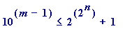
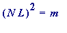

> # how_many.mws
How many, how big?
Introduction
. Let
be the
n
-th
Fermat number
; that is, let:
![[Maple Math]](images/HOW_MANY2.gif) (
(
 , ... )
, ... )
This entirely elementary worksheet is solely concerned with two questions :
Question #1
.
How many
digits does
 have, when expressed in the base 10?
have, when expressed in the base 10?
Question #2
.
How big
(measured in
Light Years
!) a square board would be needed on which to write
 , assuming digits were written at (say) '
, assuming digits were written at (say) '
 '
'
digits per inch? [in practice
might be a reasonable value, but we will also look at atomic levels, with (say)
.]
and I leave it as an exercise to deal with
Question #3
.
How long
(measured in
years
) would it take to write out
 on the assumption that one wrote the digits of
on the assumption that one wrote the digits of
 at (say)
'
' digits
per second
?
at (say)
'
' digits
per second
?
Question #1:
how many
?
Let
 have
m
digits, when expressed in the base 10; then:
have
m
digits, when expressed in the base 10; then:

<
 .
.
In fact - since is clearly impossible (one is even, the other odd) - we have:
< .
Taking logarithms to the base 10, we have:
<
 ,
,
and so: .
where is the ' integer part of ' mathematical function, which in Maple goes by the name of ' floor '. Thus in Maple notation ' m ' is given by:
floor(2^n*log[10](2)) + 1
Let's look at some calculations :
> F := n -> 2^(2^n) + 1; # defining 'F' as a function
> seq(F(n), n=0..5); # the first 6 Fermat numbers

> length(F(19)); # F(19) is big:
> length(F(20)); # F(20)
> length(F(21)); # as one would expect:
Error, (in F) object too large
>
And that's
only
!! But we will later be examining
 !!!!
!!!!
Question . How can one do this?
Answer
.
Simply by
working with an approximate decimal value for
 ,
and not
compute explicit computation of actual values of
,
and not
compute explicit computation of actual values of
 :
:
>
say1 := proc(n)
lprint(`The ACTUAL NUMBER ('m') of base
10 digits in the`,n,`-th. Fermat number is`,
floor((2^n)*log[10](2.0)) + 1)
end:
>
Some comparative examples ( Note : I have placed the comment sign '#' immediately before the command to prevent output, and to save space in this worksheet. All you have to do if you are interested is:
first delete the '#'
then go to File and Save as a precaution
and then execute the command
> # length(2^(2^19) + 1);
> say1(19);
The ACTUAL NUMBER ('m') of base
10 digits in the 19 -th. Fermat number is 157827
>
> length(2^(2^21) + 1);
Error, object too large
> say1(21);
The ACTUAL NUMBER ('m') of base
10 digits in the 21 -th. Fermat number is 631306
>
> say1(200);
The ACTUAL NUMBER ('m') of base
10 digits in the 200 -th. Fermat number is 483736552500000000000000000000000000000000000000000000000001
>
One should bear in mind that 'ACTUAL VALUE' should be understood to be 'APPROXIMATE VALUE' for large values of n , because of rounding
errors involving the 10-place approximate value Maple is using for
 .
.
But the order of magnitude is certainly correct .
Now let's look at
 [
Note
: I have placed the comment sign '#' immediately before the command to prevent output, and to save space in this worksheet. All you have to do if you are interested is:
[
Note
: I have placed the comment sign '#' immediately before the command to prevent output, and to save space in this worksheet. All you have to do if you are interested is:
first delete the '#'
then go to File and Save as a precaution
and then execute the command ]
> # say1(382477);
>
I think we would all agree that is a bit too much!!
That can easily be dealt with by making a simple alteration to the procedure say1:
>
say2 := proc(n) local P1, P2, M;
P1 := n*log[10](2.0);
P2 := log[10](log[10](2.0));
M := P1 + P2;
lprint(`A good APPROXIMATE value of
the number of base 10 digits in the`, n,
`-th. Fermat number is 10 TO THE POWER of`, M)
end:
>
The rationale behind the definitions of those local variables should be clear [but would require some explanation for some students].
[I could omit those local variables altogether, but I have used them as a guide to how the ' M ' is arrived at.]
Some examples .
> say2(12);
A good APPROXIMATE value of
the number of base 10 digits in the 12 -th. Fermat number is 10 TO THE POWER of 3.090969720
>
Remove the comment sign, and execute, to compute actual value:
> # F(12);
> length(F(12));

> 10^3.090969720;
>
> say2(1000);
A good APPROXIMATE value of
the number of base 10 digits in the 1000 -th. Fermat number is 10 TO THE POWER of 300.5086055
>
> say2(382447); # the new record composite Fermat number
A good APPROXIMATE value of
the number of base 10 digits in the 382447 -th. Fermat number is 10 TO THE POWER of 115127.4974
>
Thus the Fermat number
 has a
huge
number of digits, and so clearly it is going to require rather a large board on which to write it down. That, then, brings us to:
has a
huge
number of digits, and so clearly it is going to require rather a large board on which to write it down. That, then, brings us to:
Question #2: how big a board?
Let's think about writing
 in a
closest fit
square board. Let's do an actual example:
in a
closest fit
square board. Let's do an actual example:
> F(7);

> length(F(7));
>
We could write F(7) into the closest fit square by:
340282
366920
938463
463374
607431
768211
457 (here some
excess
over the 6 by 6 square)
or by:
3402823
6692093
8463463
3746074
3176821
1457
(here some
shortfall
under the 7 by 7 square)
Okay, the individual digits are not occuping squares.
Now define the variables , and record their approximate relationship :
Let
 - having
m
digits
when expressed in the base 10 - be written in a closest fit square board (with some possible excess or shortfall)
- having
m
digits
when expressed in the base 10 - be written in a closest fit square board (with some possible excess or shortfall)
with side length
 inches
inches
Let the digits (occuping equal height and width) be written at
 digits per inch
digits per inch
Approximate
connection:

giving:
.
Now to compute the side length - first in inches - of the square it would take to write out (really big) Fermat numbers.
First, though, I wish to note this: I could work with the following procedure - which is formed in the obvious way from the earlier ones:
>
# inches := proc(n, N)
# lprint(`The approximate side length - in INCHES -
# of the closest fit square in which to write the
# digits of the`, n,`-th. Fermat number is`,
# evalf(sqrt(floor((2^n)*log[10](2.0)) + 1))/N)
# end:
>
but instead I am going to work with this slight alteration of it:
>
inches := proc(n, N)
lprint(`The approximate side length
of the closest fit square in which to
write the digits of the`, n,`-th. Fermat
number at`, N, `digits per inch is`,
evalf(sqrt((2^n)*log[10](2.0)))/N, `INCHES`)
end:
>
in which I have omitted :
the ' +1 ' (that's of no real consequence)
the use of ' floor ' (that is of consequence because there are computational time problems when large values of ' n ' are involved)
>
Examples (Note. Remove the comment sign before the following command, and then execute).
> # length(F(19));
> sqrt(157827.0);
>
Thus to write out in a square would essentially require a 397 by 397 grid, and so if the digits were written at - four digits per inch - then the side length of the square would be about inches
>
> inches(19, 4);
The approximate side length
of the closest fit square in which to
write the digits of the 19 -th. Fermat
number at 4 digits per inch is 99.31843183 INCHES
>
> inches(70, 4);
The approximate side length
of the closest fit square in which to
write the digits of the 70 -th. Fermat
number at 4 digits per inch is 4712970738. INCHES
>
And, of course, if we double the number of digits per inch then it halves the length of the square:
> inches(70, 8);
The approximate side length
of the closest fit square in which to
write the digits of the 70 -th. Fermat
number at 8 digits per inch is 2356485369. INCHES
> inches(70, 16);
The approximate side length
of the closest fit square in which to
write the digits of the 70 -th. Fermat
number at 16 digits per inch is 1178242684. INCHES
>
Those squares are BIG (which comes as no surprise, though it causes a problem to ones brain to visualise!)
Let's convert to miles [I grew up with inches, feet, yards, ... , miles, and so apologies to anyone used to centimetres etc. Make your own conversions]. Recall there are:
12 inches in a foot
3 feet in a yard
1760 yards in a mile
>
miles := proc(n, N)
lprint(`The approximate side length
of the closest fit square in which to
write the digits of the`, n,`-th. Fermat
number at`, N, `digits per INCH is`,
evalf(sqrt((2.0^n)*log[10](2.0)))/(N*12*3*1760),
`MILES`)
end:
>
> miles(70, 16);
The approximate side length
of the closest fit square in which to
write the digits of the 70 -th. Fermat
number at 16 digits per INCH is 18596.00196 MILES
>
> miles(700, 32);
The approximate side length
of the closest fit square in which to
write the digits of the 700 -th. Fermat
number at 32 digits per INCH is .6206377985e99 MILES
>
And there - as you see - Maple has moved to the level of exponential notation, and this is the place to start converting to Light Years .
First, though , I want to make an optical change to the ' lprint ' line in the miles proc: instead of saying "the number of miles is X ... ", I want to alter it to: "the number of miles is 10 to the power of ... ",
>
miles2 := proc(n, N)
lprint(`The approximate side length
of the closest fit square in which to
write the digits of the`, n,`-th. Fermat
number at`, N, `digits per INCH is 10 to
the POWER of`,
log[10](evalf(sqrt((2.0^n)*log[10](2.0)))/(N*12*3*1760)),
`MILES`)
end:
>
> miles2(70, 16);
The approximate side length
of the closest fit square in which to
write the digits of the 70 -th. Fermat
number at 16 digits per INCH is 10 to
the POWER of 4.269419583 MILES
> miles2(700, 16);
The approximate side length
of the closest fit square in which to
write the digits of the 700 -th. Fermat
number at 16 digits per INCH is 10 to
the POWER of 99.09386822 MILES
>
Now, what I really want is to let
, to see the
GIGANTIC
size of the Fermat number
 :
:
> miles2(382447, 4);
The approximate side length
of the closest fit square in which to
write the digits of the 382447 -th. Fermat
number at 4 digits per INCH is 10 to
the POWER of 57558.34481 MILES
>
Three final things to do :
Convert to
light years
Greatly increase
the value of

Examine some
down-to-earth distances
First, recall the definition of a ' light year ':
Definition . A light year is the distance traversed by light in one year.
Working assumption s.
The speed of light is 186,000 miles per second
The year has 365 days
Converting miles to light years :
> light_year := 186000*60*60*24*356; # miles

>
I want to express that as an approximate power of 10:
> log[10](5721062400000.0);
>
And so a
light year is
 miles
, which explains the following alteration of the
miles3
procedure:
miles
, which explains the following alteration of the
miles3
procedure:
>
LIGHT_YEARS := proc(n, N)
lprint(`The approximate length of
the closest fit square in which to write
the digits of the`, n,`-th. Fermat
number at`,
N, `digits per INCH is 10 to
the POWER of`,
log[10](evalf(sqrt((2.0^n)*log[10](2.0)))/(N*12*3*1760)) - 12.75747668,
`LIGHT YEARS`)
end:
>
And thus - writing at 4 digits per inch - the Fermat number
 would require a square whose size was give by:
would require a square whose size was give by:
> LIGHT_YEARS(382447, 4);
The approximate length of
the closest fit square in which to write
the digits of the 382447 -th. Fermat
number at 4 digits per INCH is 10 to
the POWER of 57545.58733 LIGHT YEARS
>
That is a very great distance (with which I cannot mentally come to terms), and it is linguistically meaningless to merely call it ' astronomically large .'
Just think for a moment of some of the great astronomical distances, from say the nearest star (apart from our own sun, which is a mere 9 light minutes away from us), through some nearby nebula (Andromeda at 2,000,000 light years), and so on ... .
And suppose we went to
atomic levels of writing
, let's say we set:

> LIGHT_YEARS(382477, 10^30);
The approximate length of
the closest fit square in which to write
the digits of the 382477 -th. Fermat
number at 1000000000000000000000000000000 digits per INCH is 10 to
the POWER of 57520.70484 LIGHT YEARS
>
That
relatively small reduction
in the length should
not
come as a surprise. Finally, let's consider some examples nearer to home, and fix
 at 4.
at 4.
I grew up in a small town (Bailieboro), about 60 miles from here:
> miles(49, 4);
The approximate side length
of the closest fit square in which to
write the digits of the 49 -th. Fermat
number at 4 digits per INCH is 51.36468395 MILES
>
The moon is about 250,000 miles away:
> miles(74, 4);
The approximate side length
of the closest fit square in which to
write the digits of the 74 -th. Fermat
number at 4 digits per INCH is 297536.0313 MILES
>
The sun is about 92,000,000 miles away:
> miles(90, 4);
The approximate side length
of the closest fit square in which to
write the digits of the 90 -th. Fermat
number at 4 digits per INCH is 76169224.01 MILES
>